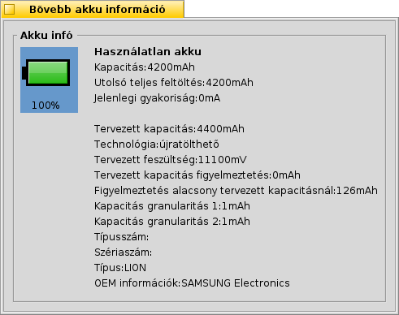

Magyar
Magyar Català
Català Deutsch
Deutsch English
English Español
Español Français
Français Italiano
Italiano Polski
Polski Português
Português Português (Brazil)
Português (Brazil) Română
Română Slovenčina
Slovenčina Suomi
Suomi Svenska
Svenska 中文 ［中文］
中文 ［中文］ Русский
Русский Українська
Українська 日本語
日本語 Energiaállapot (PowerStatus)
Energiaállapot (PowerStatus)
| Asztalsáv: | ||
| Útvonal: | /boot/system/apps/PowerStatus | |
| Bellítások: | ~/config/settings/PowerStatus settings |
Az Energiaállapot informál minket az akkumulátor töltöttségi szintjéről, ami igen hasznos hordozható számítógép használatakor. Ha még nem fut, akkor a program indításkor megkérdezi, hogy ablakban akarjuk-e futtatni vagy az Asztalsávon jelenjen meg. Ablakban futtatva lehetőségünk van átméretezni és Replikánsként használni.
Indítás után a helyi menüvel vezérelhető.
Megjegyzés: a program futásának a feltétele a működő ACPI.
A helyi menü az alábbi opciókat tartalmazza:
| Az akku töltöttségének illetve a hátralévő időnek a megjelenítése. | ||
| Az ikon megjelenítése. | ||
| Választhatunk, hogy töltöttségi százalék, vagy hátralévő idő jelenjen meg ( be kell hogy jelölve legyen). | ||
| Részletes akkumulátor információk megjelenítése külön ablakban. | ||
| Névjegy megjelenítése. | ||
| Kilépés a programból. |
Ha a be van jelölve, akkor a töltöttségi szint zárójelben jelenik meg a töltés ideje alatt.